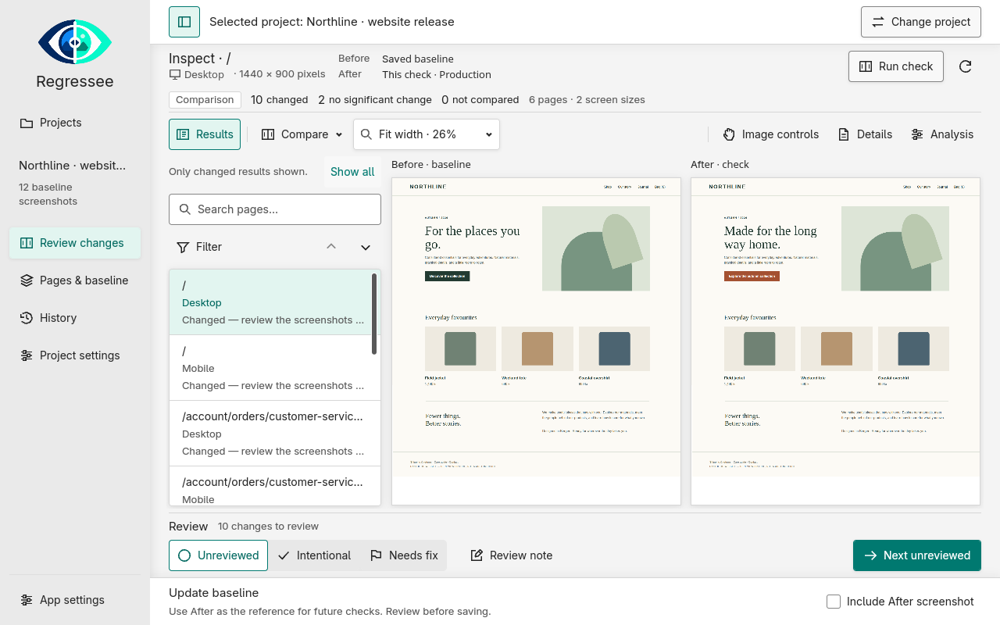
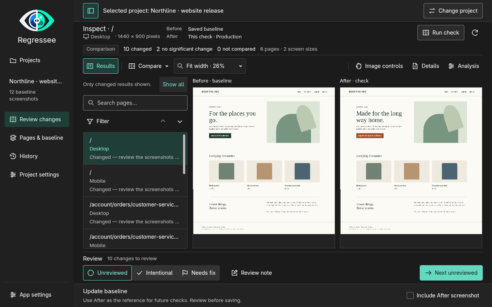
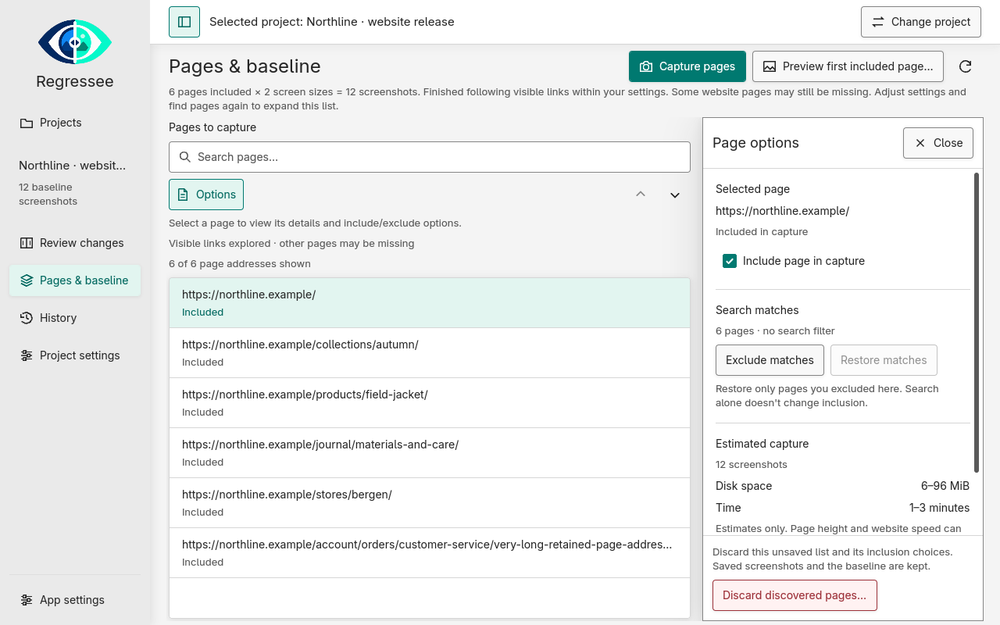
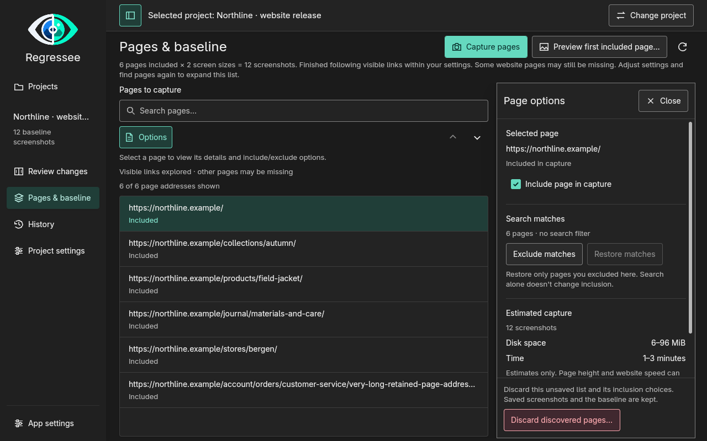
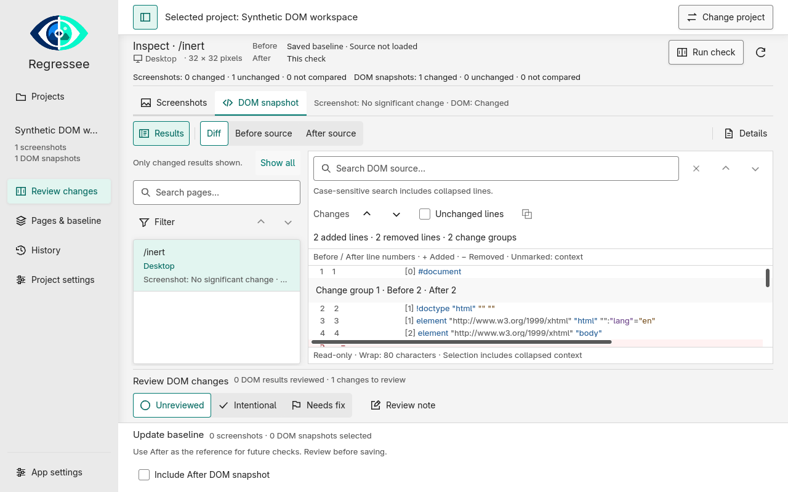
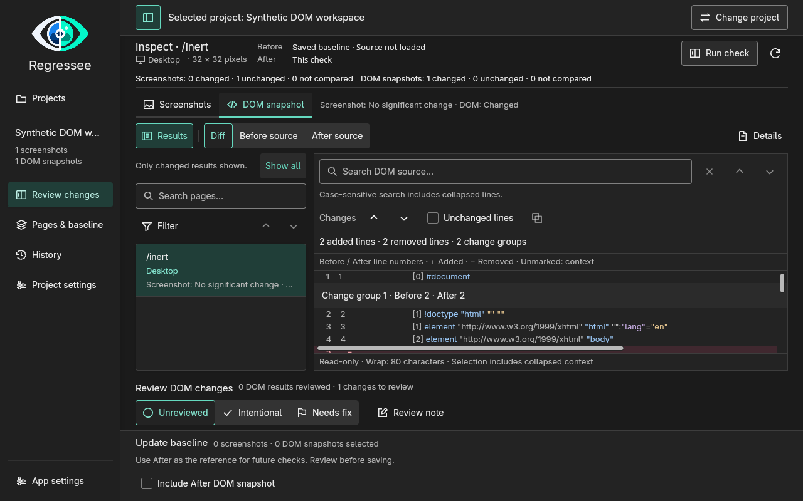
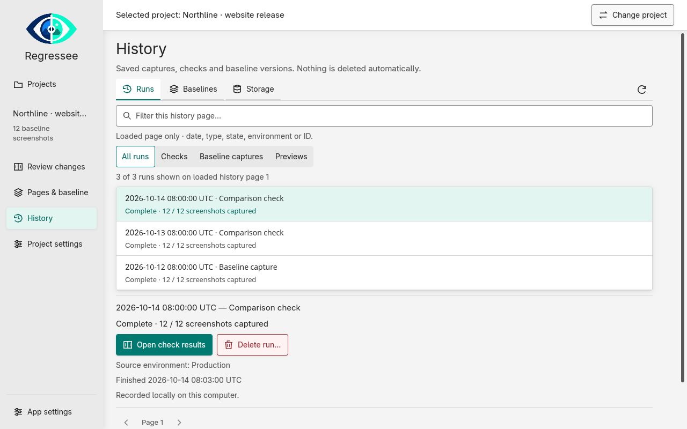
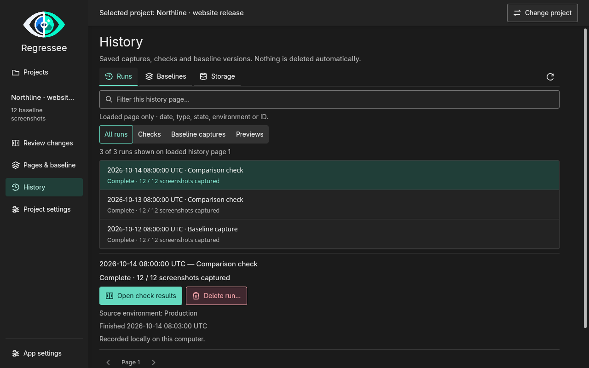
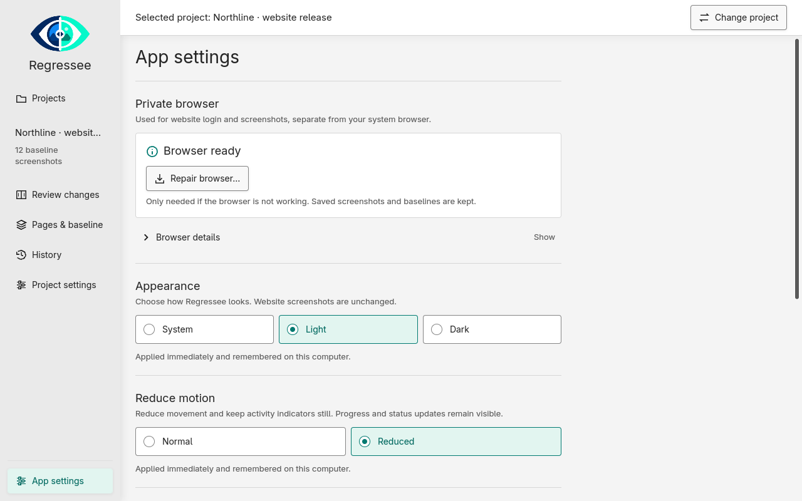
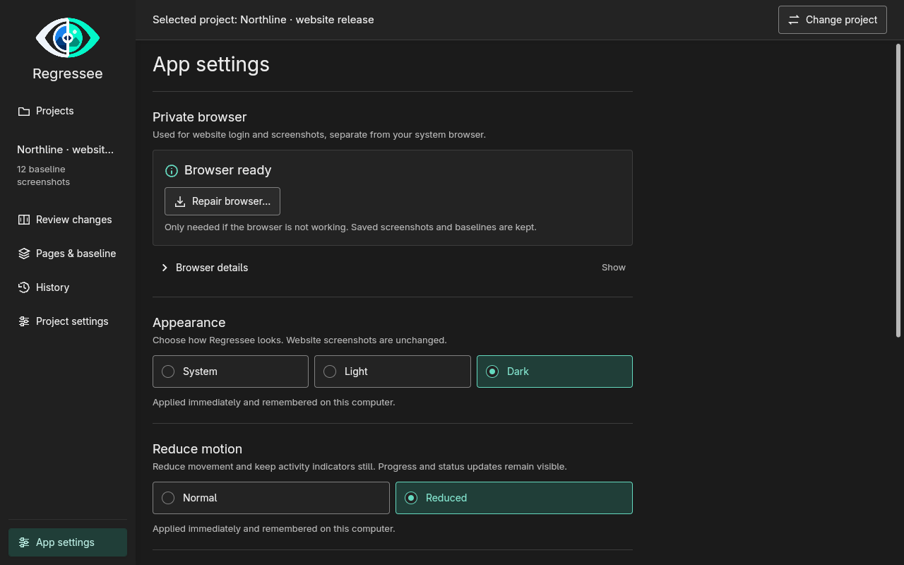

See exactly what changed on your website.
Capture your site once as a baseline, then review what changed after every deploy in screenshots and page structure. You decide what to accept.
Checking a release without a baseline.


What a check does
Point Regressee at your site once and save a baseline. From then on, every check revisits the same pages at the same screen sizes, so each run compares like with like.
-
Revisit
Every page from the baseline is opened at the same screen sizes with the same settings, so the comparison stays fair from run to run.
-
Compare
Screenshots are compared against the baseline, and page structure is checked line by line. Anything that failed to load is reported as not compared, so a broken capture can never pass as a clean result.
ChangedNo significant changeNot compared
-
Review
Compare before and after side by side, or switch to difference, overlay, heatmap or a draggable split. Tune the sensitivity or mark areas to ignore, and your original captures stay untouched.
-
Approve
Approve the changes you accept into a new baseline version. Earlier versions and every run stay in History until you choose to delete them.
What’s in the box
Everything you need to check a site before and after a release. Switch to Light or Dark and the screenshots follow.
Point it at your site
Enter a URL and Regressee follows the visible links, inside the boundaries you set: a page limit, skipped paths, one section of the site. You review the page list it found before anything is captured, then choose mobile, tablet and desktop sizes, and whether to capture screenshots, page structure or both.
- Review the page list before anything is captured
- Time and disk estimates before you start
- Sets up its own private browser, so there is nothing to install


Catch what screenshots miss
A swapped link, a changed label, a heading that lost its level: changes that never show up in a screenshot. Regressee compares the page structure line by line and shows what was added or removed, in source you can read. Screenshot and structure results are approved separately, so one never hides the other.
- Added and removed lines, shown as readable source
- Sensitivity you can tune without recapturing
- Mark areas to ignore and keep the originals intact


Baselines you approve, history you keep
Nothing becomes a baseline until you save it. Approve the results you accept into a new version, keep earlier versions as long as you like, and see every run and its disk use in History. Cleanup shows you what it will remove first.
- Earlier versions stay until you delete them
- Storage use, low-space warnings and manual cleanup
- Results, notes and decisions recorded per run


A few more things
- Sites with a login
- Sign in through the app’s own browser. Sessions are encrypted with an OS-protected key, and production and staging logins stay separate.
- Share a baseline
- Export a baseline as a ZIP and import it on another machine. Logins and keys stay behind, so each person signs in for themselves.
- CLI and agent skill
- Run the same engine from a terminal, with a skill for Claude Code, Codex or GitHub Copilot. Reports are plain HTML files on your disk.
- Local by default
- Projects, screenshots and baselines stay on your machine. No account and no cloud, and diagnostics are shown to you before anything is saved.


Download the beta
Preview builds for Windows and Linux x86_64. Nothing to install first: Regressee sets up its own private browser the first time you run it, which needs an internet connection.
Windows x86_64
regressee-desktop-windows-x86_64.zip · 36.1 MB
Download .zipUnzip the archive, keep the two executables (regressee and regressee-desktop) together, and launch regressee-desktop. The build is unsigned, so Windows may warn about the publisher.
Linux x86_64
regressee-desktop-linux-x86_64.tar.gz · 42.9 MB
Download .tar.gzA portable directory you can run from anywhere. Built for Ubuntu 24.04-compatible systems with a working graphics backend; the support matrix has the details.
Prefer a terminal? CLI-only builds are here: Linux · Windows. Checksums, all previews and the source archive are on GitHub Releases.
Version v0.1.0-preview.10 · macOS is not available yet. These are unsigned preview builds from a public beta.
Good to know
A few things worth knowing before you rely on it.
- You decide what a change means
- Regressee shows what changed; whether it matters is your call. A failed capture is always listed as not compared.
- Some pages are harder to capture
- Fonts, operating systems, dynamic content and slow pages can all affect a comparison. Every capture keeps its warnings, so you can judge the result for yourself.
- Private content can hide in structure
- Script bodies, handlers and form values are left out, but hidden text and attributes can still appear. Check an export before you share it.
- Phone and tablet checks are emulated
- They use Chromium’s device emulation, so real iOS and Safari rendering can differ. Very tall pages have capture size limits too.
- Visit only sites you are allowed to check
- Use read-only test accounts where you can. Loading a page can change server data, even when you never click or submit anything.